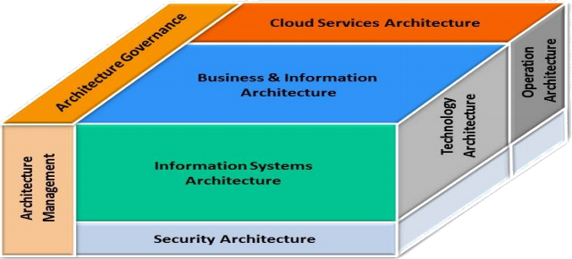
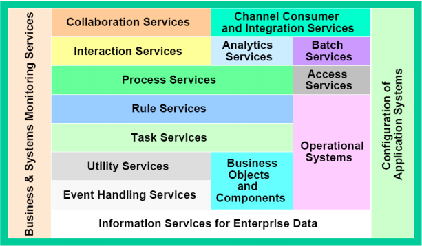
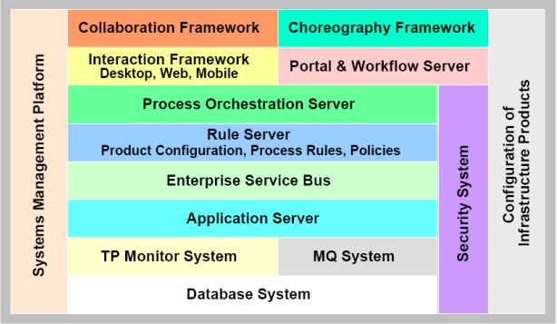
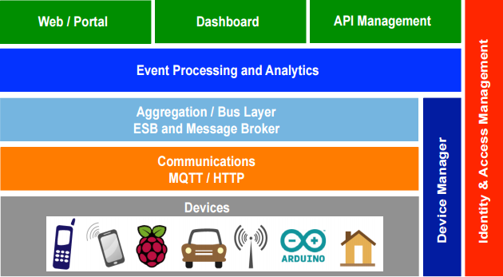
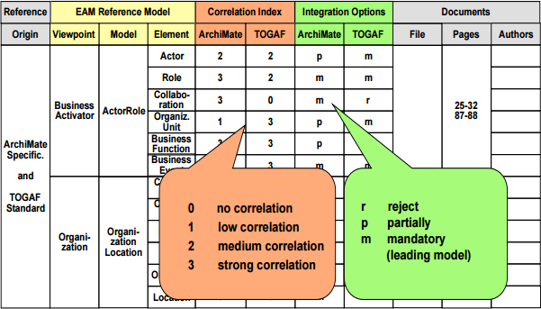
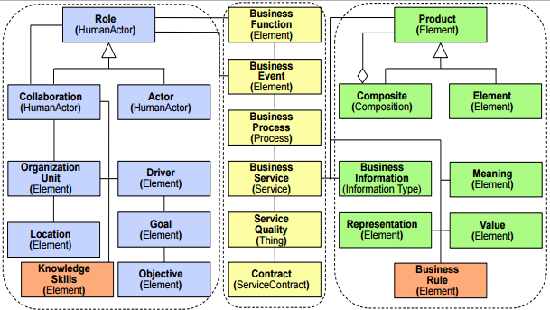

Mesut Can Gurle
Enterprise Architecture Management align both business and IT with strategy and goals.
Paper defines Digital Enterprise Architecture to extend Enterprise Architectures for digital transformation efforts.
Service-oriented systems close the business - IT gap by delivering appropriate business functionality efficiently and integrating new service types coming from the Internet of Things
The current state of art research for the Internet of Things architecture lacks an integral understanding of Enterprise Architecture and Management and shows an abundant set of physical-related standards, methods and tools, and a fast growing magnitude of heterogeneous IoTdevices.
The aim of the research is to close the gap and enhance analytical instruments for cyclic evaluations of business and system architectures of integrated Internet of Things environments. The paper introduce the extended service-oriented enterprise architecture reference model in the context of new architecture metamodel integration approach and ontology for an integral Enterprise Architecture of the Internet of Things
The ESARC – Enterprise Services Architecture Reference Cube complements existing architectural models, standards and frameworks for EAM – Enterprise Architecture Management and extends these architecture standards for services and cloud computing in a holistic way. ESARC is an original architecture reference model, which provides a holistic classification model with eight integral architectural domains.

The Business and Information Reference Architecture - BIRA provides, a single source and comprehensive repository of knowledge from which concrete corporate initiatives will evolve and link. The BIRA confers the basis for business-IT alignment and therefore models the business and information strategy, the organization, and main business demands as well as requirements for information systems, such as key business processes, business rules, business products, services, and related business control information.


The Internet of Things enables a large number of physical devices to connect each other to perform wireless data communication and interaction, by using the Internet as a global communication environment. A cloud centric vision for architectural thinking of a ubiquitous sensing environment. The typical configuration of the Internet of Things includes besides many communicating devices a cloud-based server architecture, which is required to interact and perform remote data management and calculations.
A service-oriented integration approach for the Internet of Things was elaborated. The core idea for millions of cooperating devices is, how they can be flexibly connected to form useful advanced collaborations within the business processes of an enterprise. The research proposes the SOCRADES architecture for an effective integration of Internet of Things in enterprise services. A layered architecture structures following bottom-up functionalities and prepares these layers for integration within an Internet of Things focused enterprise architecture.



EAIoT-Mini-Descriptions to a global EA model and enterprise architecture repository by promoting a semi-automatic and collaborative decision process. Extending the architectural model and transformation approaches with research for ontology-based model transformations and elements. Additional improvement methods for visualization of architecture artifacts and control information to be operable in an architecture management.